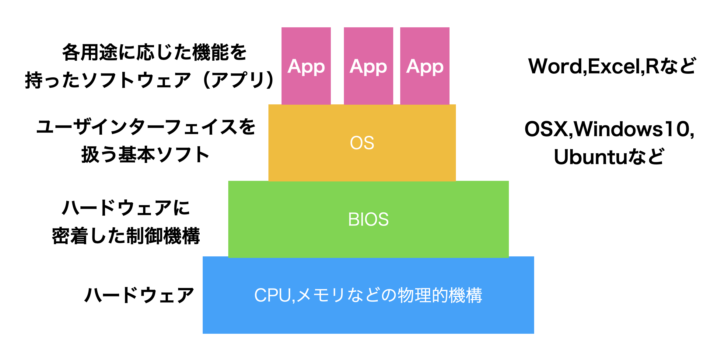
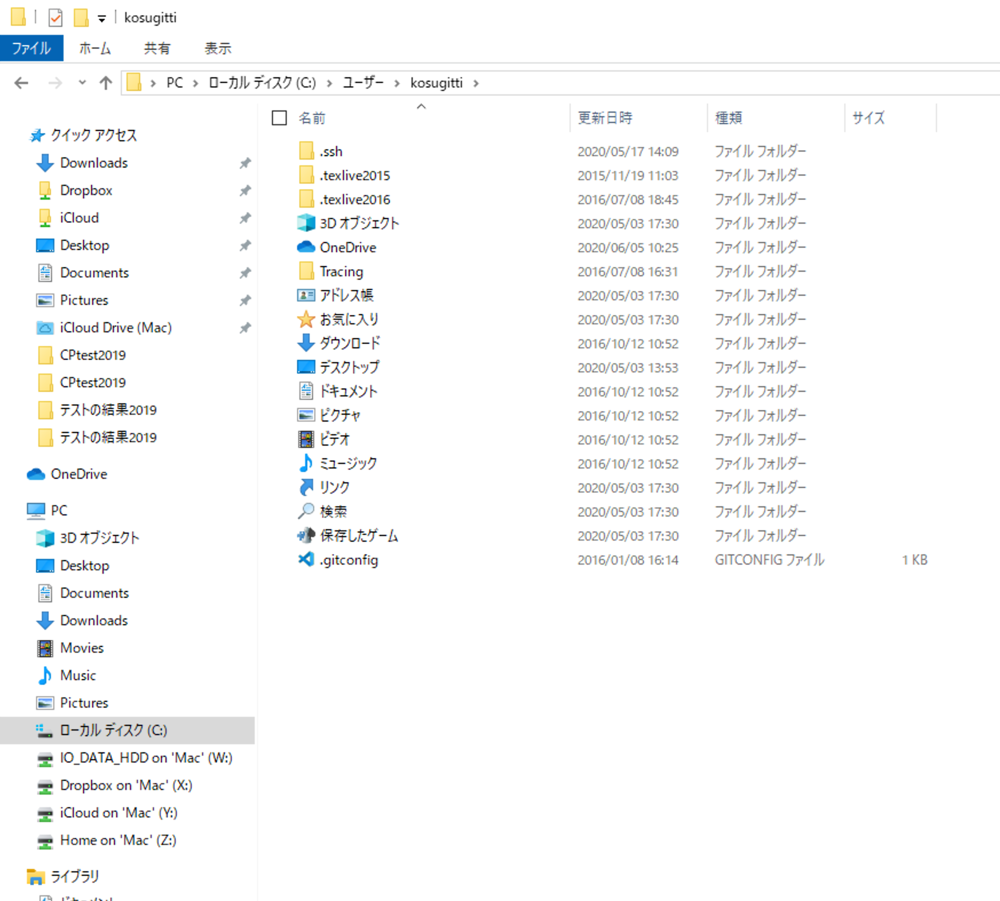
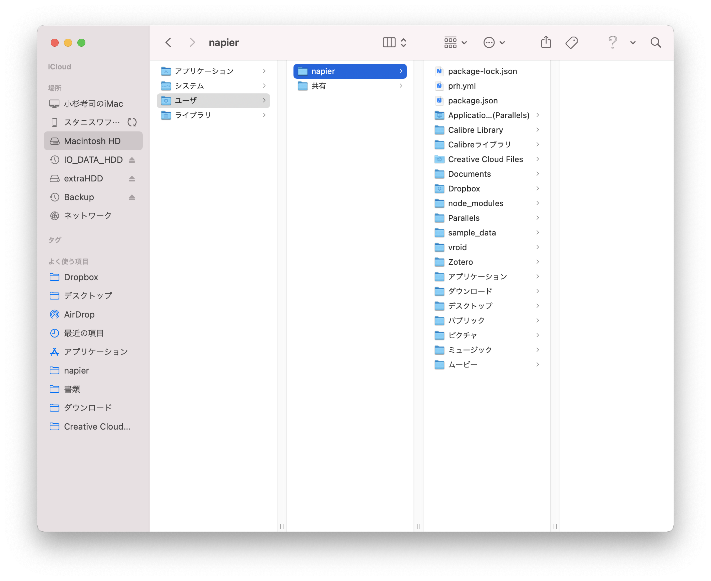
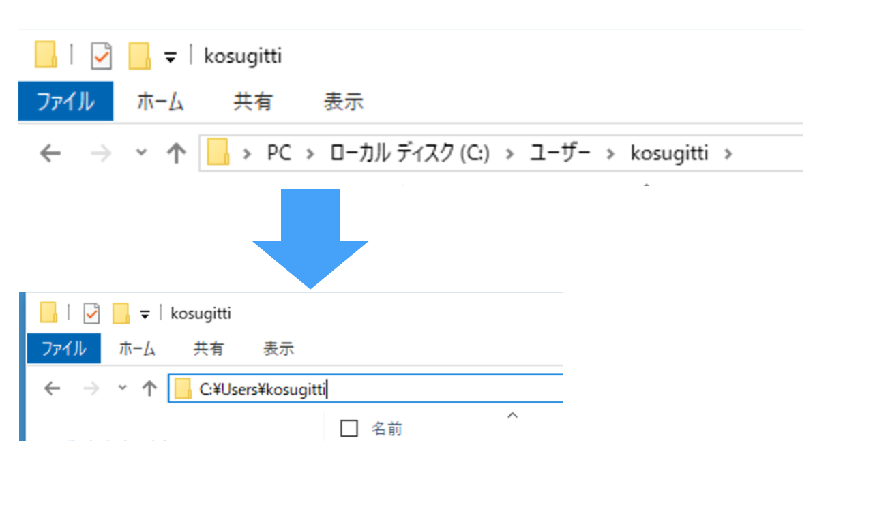
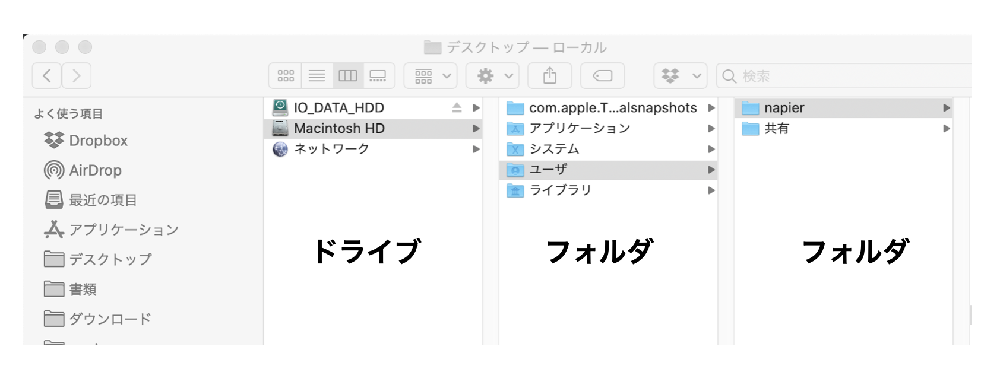
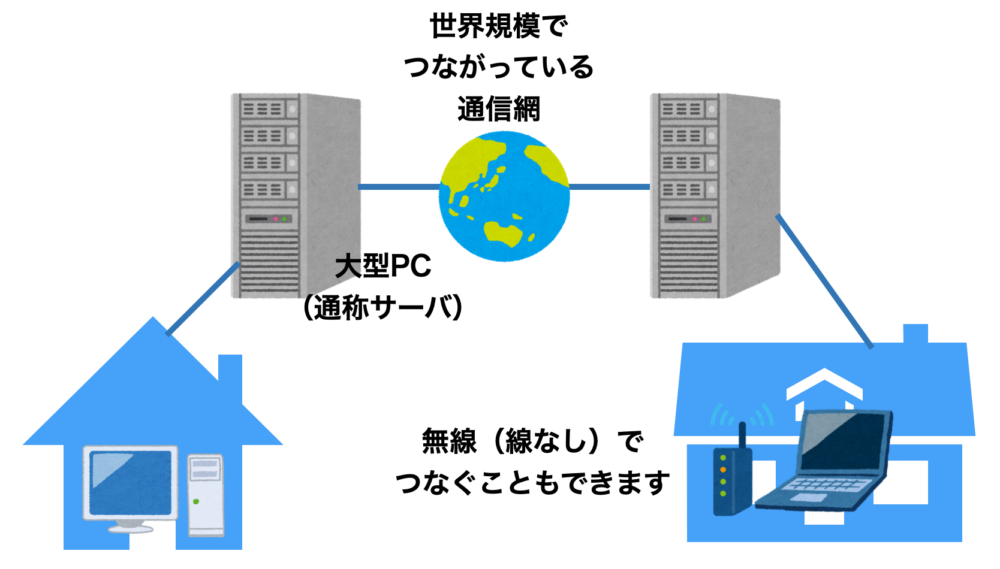

Chapter 12 電子計算機のイロハ
12.1 前置き
前回は心理学と統計の関係について，という事前準備をお話ししました。ではいよいよ内容に入るか，と言ったらそうではなく，今回もまだ準備運動の段階です。すみません。 しかも今回はコンピュータの話です。そんなの聞かなくてもわかってるよ，という人もいるかもしれませんし，知らなくてもみなさんはきっとスマートフォンやタブレットを使っていることと思います。しかし知らずに使うことと，知ってて使うことには大きな違いがありますし，今後大学でレポートや論文を書いたり，それに必要な統計処理をするためにも，計算機の基本的な特徴を知っておく必要があるのです。コンピュータ関係の授業で聞いたことがある話，これから聞く話もあると思いますが，もし苦手意識を持っている人がいたらこれを機に再入門するつもりで読んでください。
12.2 コンピュータの基礎
21世紀に生きる私たちは身の回りをコンピュータに囲まれて生きています71。それは携帯電話の形をしていたり，ノートパソコン，デスクトップパソコンの形をしていたりします。また時々テレビなどで報道されますが，気象予報や飛沫がどのように飛び散るかをシミュレーションする大型計算機「富嶽」などもコンピュータですね。これらは形は違いますが，いずれも電子計算機であり，電子計算機には次の5つの装置があります。
- 入力装置
キーボードやマウス，タッチパネルなどを使って情報を取り込むデバイス(装置)
- 出力装置
モニタやプリンタ，タッチパネルなどを経由して情報を出力するデバイス
- 演算装置
プログラムの命令に従って計算処理(四則演算や論理演算)をする装置。一般に電子計算機の中央で一括して処理するので，Central Processing Unit(CPU)と呼ばれるものです。
- 制御装置
演算結果に従って他の装置に指示を出す装置のこと。演算装置とまとめてCPUに実装されています。
- 記憶装置
計算結果などの情報を一旦保持しておく装置のこと。コンピュータの内部にあって一時的な計算に使われる一次記憶装置，ハードディスクドライブ(Hard Disk Drive,HDD)やソリッドステートドライブ(Solid State Drive,SSD)などの二次記憶装置など。
最後の記憶装置については，一次記憶装置，二次記憶装置と種類が分かれていますがこの区別は簡単で，電源を落とした時に記憶が消えてしまうのが一次記憶装置，電源を落としても記憶が消えないのが二次記憶装置です。例えば\(12+38=\)という計算をするとき，頭の中で「えーっと一の位が2と8だから10になって繰り上がるから・・・」と考えてから，ノートに\(=50\)という答えを書くと思います。次の問題に進むと，先ほどの「1繰り上がるから・・・」という情報は忘れてますよね。でもノートに書いた\(12+38=50\)というのは残っています。このノートがいわば二次記憶装置であり，頭の中で一時的に保持していた情報が一次記憶装置ということになります。一次記憶装置はRAM(Random Access Memory)とも呼ばれます72。
ところで，コンピュータがやっているのは計算だけです。私はこの資料をPCに向かって書いており，キーボード(入力装置)を叩きながら，画面(出力装置)を見て文字を連ねています。これも「キーが押されたら文字を表示させ，その文字列を記録する」という処理を機械が淡々とこなしているに過ぎません。あるいはマウスやトラックパッドで，アイコンを指し示し，カチリと押す73ことで選択し，押し込んだまま移動させ(ドラッグ)，離すことで別の場所に置いたりします(ドロップ)。トラックパッドの場合は2本指で同時に押したりしますし，タッチパネルの場合は二本指を広げたり(ピンチアウト)，逆に二本指を狭めたり(ピンチイン)，3本以上の指でファサーっと触って場所を広げたりします。例えば「ファイルを掴んでゴミ箱に捨てる(削除する)」というのが我々にとっての操作ですが，コンピュータの内部では実はこんなことをしていません。ファイルは(二次)記憶装置に書き込まれた情報です。記憶装置は原稿用紙のように小さなマス目がたくさんあって，ファイルとはそのマス目のXXX番目からYYY番目までの情報，ということです。このファイルを削除するというのは，記憶装置のある場所(アドレス)に「削除されたものなので画面に表示しない」という情報を書き込む，という操作をしているだけです。じゃあなぜ私たちは「ゴミ箱にドラッグ＆ドロップ」なんてするのでしょう？ それはそのほうがわかりやすいからですよね。「ファイルを削除する」というのは，「メモリアドレスのXXX番地に別の情報を書き込む」という操作だと言われてもピンとこないので，コンピュータが人間にとってわかりやすい表現をして見せてくれているのです。このユーザにとってわかりやすい幻を見せてその気にさせてくれるというデザインのことを，ユーザーイリュージョンと言います。ともかくこういう「画面で見ながら操作する」ことをグラフィカル・ユーザ・インターフェイス(Graphical User Interface,GUI)といいますが，これのおかげでコンピュータの操作は随分楽になっています74。
12.3 コンピュータの歴史
コンピュータの装置，すなわちハードウェアについての解説につづいて，ソフトの側面についても解説を加えようと思うのですが，そのためには少し歴史的な流れを説明したほうがわかりやすいかもしれません。
コンピュータの発展の歴史は，小型化の歴史でもあります。最初にできたコンピュータはENIACといいます。1946年の話です。このENIACは27トン，広さにして倉庫1つ分(167\(m^2\)，90畳以上の広さ)が必要なもので，真空管を使った計算機でした。軍事的な計画のために開発されたオーダーメイドのものですから，一般人が触れるはずがないものです。時代が下がって真空管が半導体，ICチップになった頃，やっとサイズが小さくなって，家庭用・個人用のコンピュータというのができるかもという時代が来ました。Appleコンピュータの創始者，スティーブ・ジョブズとスティーブ・ウォズニアックが最初のパソコン(Personal Computer,PC)，Apple Iを発売したのが1976年。爆発的に売れたApple IIが発売されたのが1977年です。AppleIIはブラウン管表示装置とキーボードを持っていましたので，今のPCの原型とも言えるかもしれません75。PCを作っている会社はAppleだけでなく，IBMやDECなどがありましたが，まだこの頃はパーソナルなレベルのものよりも大型計算機の開発が進んでいました。IBMがPCを作ったのは1980年で，この頃から小型化が進められていきます。
私事で恐縮ですが，1976年に生まれた私が初めてPCを手にしたのは1991年，高校入学のお祝いで買ってもらったFujitsuのFM-Townsという機体でした。この頃は「マルチメディア」という名前もなく，「ハイパーメディア」と読んで売り出していました。この機体は他のPC(NECのPC-9801やSharpのX68000シリーズが有名でした)とは違って，CD-ROMドライブをつけていたことが画期的だった時代です。その後1994年に大学生になりましたが，この頃は連絡を取り合うツールはポケベルが主流であり，携帯電話(やPHS)のような個人端末は高級品という時代でした。大学に入るとコンピュータを学ぶ授業があり，アカウントをもらったりするのですが，それは大学が持っている大型計算機に端末からアクセスするためのものでした。いろんな部屋にあるのは「端末」で，それほど機能の優れたPCではなく，複雑な計算(統計的な計算など)は大型計算機に仕事を依頼しその返信を待つ，というスタイルでした。関西私立のマンモス校でしたので学生数は非常に多かったのですが，多くの学生が一度にアクセスしても，大型計算機はものすごくものすごーく計算が早かったので，瞬時に回答をもたらしてくれるものでした76。つまり，まだ「専門的な計算は大型計算機」という時代であり，パーソナルなコンピュータになるにはもう少し時間が必要でした。
どれぐらいか，というと，実はその次の年なのです。1995年，Windows 95というOSが発売されました。これを機に日本でもPCがどんどん浸透していくことになります。Windows95は物凄いんだぞ，と発売前からテレビでも散々とりあげられ，発売日には行列ができて真夜中のカウントダウンと同時に大フィーバー，という売れ行きでした。当時のそれは何が凄かったのでしょう？ コンピュータにはそれ動かす基本ソフトが必要です。HDDにデータを書き込み，キーボードからの入力をディスプレイに表示する，といったごく基本的な装置を統括し，メモリ番地をファイルという単位で扱うと言った基本的な操作はOSいうソフトウェアが担当します(図1.1)77。このOS，大型計算機はUnixと呼ばれるものを使っていましたが，各企業が個人向けにコンピュータを売り始めるときにも当然必要で，各社で開発もしていましたが，PCの共通規格をつくることでOS部分は共有できるようになりました。そこを提供したのがMicrosoft社のビル・ゲイツです。どんなパーツで作られたPCであってもWindowsというOSが共通のフィールドを用意してくれるので，ユーザはWindowsで動くアプリケーションを選ぶだけで良い，ということになったのです。

コンピュータのハードウェアとソフトウェアの関係
そしてWindows95は，GUI，つまり「ファイルを掴んでポイ」といった直感的な操作で使えることも大きな特徴でした。大型計算機で使われているLinuxは基本的にCommand User Interface,CUIで，黒い画面にプログラムを書いて実行するといった手法で，初心者には人気がなかったのです。GUIについては，その頃Appleを追放されていたスティーブ・ジョブズが，NeXTという会社でGUIを備えたOSを開発していました。このNeXTはその後Appleに買収され，ジョブズはAppleに戻って活躍することになります。その頃から巷では，WindowsのGUIはAppleのOSを真似したものだと非難されていたのですが，商業的にはWindowsが大勝利，というわけです。ともかくこれを機に企業などはもちろん一般家庭でもPCを使うような時代になりました。
ちなみにインターネットが広まったのもこの頃です。私は大学3年生の時，大学の授業で初めてインターネットを介して世界の情報を得る，という経験をしました78。その頃から徐々に，大型PCのアカウントではなくインターネットで使えるメールアドレスというのを個々人が持つようになりました。携帯電話も廉価なPHSが広まり，メッセージだけでなく徐々に音声，写真，短い動画が遅れるようになっていきます。当初は当然画質・音質も今とは比べものにならないのですが，それでもインターネットを経由してつながるという経験は想像を超えたものでした。
皆さんはすでに，携帯電話やインターネットがある時代に生まれた世代だと思います。こんな話はすでに過去のものであり，不便な頃の話を聞かされても困る，と思うかもしれません。私の世代は，幸いにもこのようにちょうどコンピュータが使われはじめ，広がり，高性能になっていくにつれて育ってきていますので，そのぶん機械の根本的な理解に直結しやすい社会環境にあったのです。みなさんは，便利な時代ではありますが，言い換えると「初心者が苦労しないように補助輪をつけておく」「何もしなくてもできているような感覚が得られるようなイリュージョンを見せておく」という状態におかれているので，補助輪が対応できない道に進んだり，多くの人とは違う使い方をするときに，急にサポートが外れどこで困っているかわからなくなる，ということになりかねません。非常に大雑把なHistorical Reviewではありますが，理解の一助になればと思います。
ところで，先ほどサポートという言葉を使いましたが，このサポートを商売にしているのがMicrosoftやAppleというIT企業です。これらの会社は，ユーザが使いやすいようにソフトウェアを提供してくれますが，有償ですし想定外の使用をするユーザに対してはサポートをしてくれません。逆にいうと，「決められた路線を走らなければ面倒を見ない」ということでもあり，これはユーザに不自由を強いているとも言えます。また，どのような仕組みで動いているのかを尋ねても，企業秘密と言って答えてくれません。コンピュータは誰でも自由に使えるべきものであり，勝手にユーザの情報を盗んだりしていないか，と言ったチェックをするためにもオープンであるべきではないか。そういう考え方に基づく，フリーソフトウェアというソフトウェアのあり方があります。UnixというOSをPC用にしたLinuxがそうであり，オフィスソフトのLibreOffice，統計環境のRなどもこの精神に賛同するものです。フリーソフトウェアは自由であり，無償です。お金と秘密を払ってサポートを受ける代わりに，ユーザが相互に助け合ってオープンで自由な世界を広げていこうという活動です。急に何の話なんだ，と思うかもしれませんが，最後のセクションでもう一度この問題に触れ，心理学，ひいては科学的活動すべてにおいて重要な問題であることを確認したいと思います。
12.4 情報の単位
コンピュータを取り巻く世界の話はこれまでにして，ソフトの側面についての解説に入りましょう。
コンピュータは文字，音，絵，動画ファイルいずれについても，全て0か1のデータとして管理します。0/1の1つの単位を1bit(ビット)と言います。1bitであればYesかNoか，という二択の情報しか提供できませんが，これが7つあれば\(2^7=128\)ですから，これで128種類の状態を表現できます。コンピュータは一般に，8bitで1つの単位として計算します。8bitのことを1byte(バイト)と言います。この1byteが1024集まったものを1kb(キロバイト)といいます79。1kbの次は，1024kb=1Mb(メガバイト)です。さらに1024MB=1GB(ギガバイト)で，1024GB=1TB(テラバイト)，1024TB=1PB(ペタバイト)，1024PB=1EB(エクサバイト)と続きます。K,M,G,T,P,Eといった名称は1000倍ごとに変わる大きさの桁をあらわしているのであって，「ギガが減る」というのは本来意味をなさない表現です80。
このビット・バイトは情報に関する基本単位なのであちこちに使われます。記憶装置について使われるとき，一次記憶装置も二次記憶装置も同じ単位なので混同するかもしれませんが，2021年現在では二次記憶装置の単位はGBからTBが使われます。USBフラッシュメモリーや外付けHDDなどは数TBの容量が一般的でしょう。これに対して，一次記憶装置は4〜64GBぐらいが相場かと思います。一次記憶装置は暗算の途中経過のように一時的に記憶する場所に過ぎないので十数Gでも問題ありませんが，二次記憶装置は結果の記録なので大きければ大きいほど余裕が持てますね。例えば数TBでもテレビドラマや映画を何本も記憶できるのですから，PBやEBなんて使うのかな，と侮ってはいけません81。すぐにそれぐらいのサイズが必要な時代が来ることでしょう。
実際，それぞれ単位ではどれぐらいの情報が記録できるのでしょうか。1byteは128文字表現できるので，英語のアルファベット26文字に加え，数字や簡単な記号であれば1byteで表現できます。例えばAという文字は01000001，Bという文字は01000010，小文字のaは01100001，と言ったように0/1の文字列8個と一対一対応させて考えるのです。日本語は1byteでは足りませんので，一文字あたり2byteが割り当てられます。また1KB(=1024byte)は500文字ですから，原稿用紙一枚ぐらいになります。1MB(=1024KB)は文字だけだと新聞一紙(朝刊の40ページ分)ぐらいで，昔の記録媒体であるフロッピーディスク一枚に保存できるのがちょうど1MBでした82。ちなみに「カメラ映像+音声」のオンラインビデオ会議を1時間やると200〜300MBぐらいの容量をやりとりしていることになります。ビデオ会議では文字(チャット)だけでなく，画像(動画)や音声も送り合いますね。実は画像や音声も，0/1に置き換えています。音声の場合，1秒間を短い間隔にくぎります。この区切りのことをサンプリング周波数といい，例えば44.1 kHzという単位は1 秒間に \(44.1 \times 1000 ＝ 44100\)点のデータの採取をします。この6データ点において，音の振動幅を区切ります。ビットレートと言いますが，例えば16bitで区切る場合は2\(^16=65,536\)段階で区切り，その高さのおとがある(1)かない(0)かで表すわけです。このように時間と音階を細かく区切り，その目に情報があるかないかを積み重ねてデータとするわけです。テキストよりも圧倒的に情報が多くなるのが分かりますね。画像も同様に，図面を細かい単位(ピクセルなど)で分けて，そこの色合いを色々な段階で区切ります。色はR(赤)G(緑)B(青)の組み合わせで表現でき，それぞれを8bit\(=2^8=256\)段階で表現したりします。一点一点にその情報がありますから，図の情報も非常に多くなるのがわかると思います。動画はその画像が時系列的に細かく分割されたものと思ってください。このように分解しますので，テキスト，音声，図，動画の順にデータサイズが大きくなります。通信機器が最初ポケベル＝数byteの情報しか送れなかったものから，徐々に絵文字，ショートメッセージ(音声)，写真83，動画が送れるように発展していきました。今では町中のあちこちで，誰もが手軽に動画をモバイル端末で見られるようになっています。あらためて，すごい進歩ですね84。85。
ところで，1byteは256種の情報が記録できるので，英語のアルファベットや数字は1byteあれば十分だが，日本語や中国語など，英語以外の言語は文字種が多いので，2byteで一文字を表すという話をしました。この2バイト文字も，例えば「あ」とか「亜」という文字に111000111000000110000010とか111001001011101010011100という文字列を割り当てるのですが，言語ごとによってどの数字をどの文字に割り当てるかという対応表が変わってきます。これを文字コードと言います。日本語はかつてShift-JISというコードで変換していましたが，今は世界のあらゆる言語に対応している共通企画である，UTF-8という文字コードで変換することが一般的です。ところがなぜか，日本のWindows OSだけShift-JISをいまだに使い続けており，他のPCとファイルをやり取りするときに文字コードの変換エラー問題が起きます。ファイルを開いて文字化けをしたりとか，プログラムが実行される際に「ファイルにアクセスできない」というエラーが生じたりするのは，この文字コードの問題が大きいのです86。受身的な対策法になってしまいますが，PCでつかうユーザ名やファイル名などは半角英数文字を使い，短くした方がこうしたエラーに出くわしにくくなります。逆に，全角文字やスペース(空白)などを含んだファイル名，やたらと長いファイル名を使っていると，こうした問題に出くわしやすくなるということです。
12.5 ファイルの場所
物理的実体(記録装置，記憶装置)の上で0/1のデータをやり取りしているだけです。記録(記憶)装置上に置かれている情報のセットは「ファイル」という形で記録されています。スマートフォンやタブレットは，ユーザの利便性のためにファイルの存在を意識しなくても良いようになってはいますが，バックエンドでは実行されるアプリケーションもファイルですし，開かれる音声や動画もファイルです。 特にパソコンでは，どの媒体，どのアプリで使うどういうファイルかを識別するために，拡張子(かくちょうし)と呼ばれる識別記号をファイルの後ろにつけています。拡張子はファイル名の背後にピリオドで区切って追記されています。ついてないように見えても，OSがそれを表示させない設定にしてあるだけであることに注意してください。代表的な拡張子と，それに対応づけられているアプリケーションは次のようなものがあります。
- .docx
マイクロソフト社の文書作成アプリケーション，Wordで使うファイル
- .xlsx
マイクロソフト社の表計算アプリケーション，Excelで使うファイル
Adobe社が開発したPortable Document Format形式。OSが違っても同じレイアウトで文書を表示できるのが利点で，PDF形式を読むことができるアプリケーションは多数。
- .txt
シンプルな文字だけのテキストファイル。文字の飾りやレイアウトなどの情報がない最もプレーンな形式なので，OSが違っても文字コードさえ合っていれば読むことができる。
- .mp3
音楽，音声のファイル。音声データには他の種類もあります。
- .jpg
画像のファイル形式の一種。
- .png
画像のファイル形式の一種。
- .csv
comma separated variablesファイル。変数をカンマ(,)で区切ったファイルという意味で，中身は.txtと同じく装飾のない文字/数字だけであり，文字コードさえ間違えなければOSを問わずに読み書きできる。データのやり取りはこの形式で行われることが多い。
.txtや.csvといった形式は，「装飾のない，文字だけの」ファイルです。こうした種類のことをASCIIファイルと言います。メモ帳などのエディタと呼ばれるプログラムで読み書きできます。逆に.docxなど特定の会社が提供するアプリケーションに対応しているファイルは，アプリの中での様々な操作・装飾を暗号化して保存しており，メモ帳などで読んでも意味がわかりません。対応しないアプリでは開くこともできません。こうした形式はASCIIファイルに対してバイナリファイルと言います。
OSは拡張子を見てファイルの種類を判別し，そのファイルを開くのに適したアプリケーションを自動的に起動し，開いてくれます87。.csvファイルはExcelなどのアプリケーションで開くことも当然できますが，その際文字コードのエラーが生じたり，保存するときに文字コードを変えたりして，形式・内容が気づかずに変わっていることがあります。Windowsも良かれと思ってやっていることなのですが，処理が徹底してないのか，かえって不便になってしまっています88。
パソコンが機能するのに必要なファイルは非常にたくさんあるので，整理するためにディレクトリ(フォルダ)の中にまとめて，階層構造を持って保存されています。複数のファイルはフォルダにまとめますが，フォルダをまとめたフォルダ，というように「階層構造」をつくっています。 図1.2や1.3に，WindowsやMacでファイルを見るための画面(アプリケーション名がそれぞれエクスプローラ，ファインダーと異なります)を示しています。いずれもアイコンの色や形は違いますが，フォルダの中にフォルダやファイルが含まれる，という形になっているのがわかると思います。

Windowsのエクスプローラ画面

Mac OSのファインダー画面
ここでWindowsの画面にある，エクスプローラの上部を見てみましょう。この例では「PC>ローカルディスク(C:)>ユーザー＞kosugitti>」とありますね。日本語の文字が入っているので2バイト文字なのかと思いきや，ここをクリックしてみると「C:¥Users¥kosugitti」と出てきます。実はこちらが本当の名前で，ローカルディスクとかユーザーと表示されていたのは使い手に優しく表現しているだけのイリュージョンなのです。ここでC:とあるのはドライブと呼ばれ89，記憶装置の実体を指します。この場合はパソコンに内蔵されたハードディスクドライブです90。このCドライブの中に，Usersというフォルダがあり，その中にkosugittiというユーザが使う領域がある，という区分になっています91。

Windowsのフォルダ階層
図1.5にはMacの画面を示していますが，ここでもドライブ，フォルダ，フォルダ，という構造になっていること，ユーザのなかにnapierというユーザ名があることなどが確認できると思います。Ubuntuなど別のOSでもこうした仕組みは同じです。これらの画面を見ながら自分で使うファイル，作ったファイルがどこにあるのかをはっきり把握できるようにしておいてください。

Mac OSのフォルダ階層
ところで，最近はこうした手元の物理的実体にファイルを置くことに加えて，クラウドに保存することも少なくありません。クラウドとは雲という意味で，インターネットの向こう側のどこか，ということを意味します。ですが，基本的にはインターネットで繋いだその先にも電子計算機があるのです。例えばパソコンAとパソコンBをケーブルで繋ぐと，パソコンAからパソコンBのファイルにアクセスできます92。このケーブルをどんどん伸ばすと，遠く離れていてもこの操作ができます。このケーブル網を世界レベルに広げているのがインターネットです93。
ここで覚えておいて欲しいのは，当たり前のようですが，ネットといっても基本的には電子計算機と電子計算機を繋げている実体がどこかにあって，ファイルのやりとりをしているだけだということです。ブラウザはウェブサイトの情報を書いたファイルを取り込んでホームページを見せてくれていますし94，Youtubeは動画のファイル，Instagramは画像のファイルへのアクセスをして見せてくれているのです。

インターネットの世界
最近ではクラウドサービス，というのがよくあります。中でもDropboxとかOneDrive，iCloudなどが有名です。これらは，ファイルをインターネットを介した別の大型電子計算機に保存(アップロード)し，インターネットを介して読み込み(ダウンロード)して使う，というものです。手元の電子計算機の中に記録されているファイルのことを「ローカル」，サーバなど遠隔地にある大型機に記録されているファイルのことを「サーバ」「クラウド」と呼んで区別しますが，このローカルとサーバのファイルを常に同じものに同期しておく便利なシステムです。こうしたクラウドサービスを使うと，たとえば大学で作業して保存したファイルを，USBメモリに保存して自宅のパソコンにコピーする，という操作をしなくても，大学でクラウドサービス上のフォルダ内に保存しただけで，自宅のパソコンにそのファイルがコピーされているため95，意識せずにそのまま作業を続けられるということです。自動的にバックアップをとってくれているとも言えるので便利ですね。
もちろん注意すべきこともあります。「他の人に見られたら困るファイル」，「アプリケーションの実行ファイル」などは通信網の向こうではなく，手元(ローカル)に置いておきましょう。個人情報・機密情報などを，クラウドドライブに保存すると，悪意を持った人が大型計算機に攻撃を仕掛けて情報を盗んでいく可能性があるからです。情報化の怖いところは，取られても気づかない(コピーすればいいだけで元ファイルになんの影響もない)ところにあります。加えて，取られたものをばら撒かれる＝インターネットを介して誰でもアクセスし保存できるようにされると，全てを回収できなくなるのも問題です。失言が記録されて拡散されると大変なことになるのは，みなさんもこの時代に生きる人間のマナーとして色々見聞するところと思います。 また，クラウドサービスで自動的に同期されるといっても，アプリケーションの実行ファイルなどはローカルに保存するべきです。アプリケーションは実行に際してさまざまな関連ファイルにアクセスしますので，1つでも場所が違うところがあるとエラーになって動かなくなります。同じOSでも，です。インターネットからとってきたソフトウェアをうっかりOneDriveに保存してしまうと，アクセスできないエラーで起動しない，ということもありますので注意してください96。
12.6 再現性のある研究実践へ
今後，みなさんはパソコンを使って文章(レポートや論文)を作成するという機会が増えてくることは間違いありません。文字を入力するだけであればスマートフォンでもいいですが，レイアウトを整えるためにはパソコンが必要になってきます。文章だけでなく，図表も作成することになりますし，図表を作るのに必要な統計的データの整理，分析もパソコンを使って行います。特に図表や統計分析は，プログラムを書いて行うことになります。機械は0と1の羅列で情報処理をしますが，その文字列を人間が考えるのは大変です。機械にやって欲しい操作，計算を人間がわかる言葉で書いたものをプログラムと言います。機械と人間を繋ぐ言語だと思ってください。この言語には色々な種類がありますが，基本的に統計環境Rという言語を使えるようになってください97。
計算だけでなく図表を書くのも，プログラミングすることになります。なぜそんな面倒なことをするのでしょう？ 表計算ソフトを使うと，誰でもマウスでカチカチっとすれば簡単にグラフが作れるのに，と思った人もいるかもしれません。その答えは端的にいうと，そのやり方だと記録が残らないからです。同じデータに同じプログラムをあてがえば，別の計算機上でも結果が同じになります。この誰がどこでやっても同じ結果になる，というのが科学の営みとして重要なことであるのは第\[chapter1\]講で説明した通りです。また，教員と研究指導のやりとりをする上でも，プログラムに書き起こされていることは利点があります。マウスでの動きを口頭で説明するのは難しいですね。さらに自分がどういう設定・環境で実行したかを完全に意識していない場合，「なんだかわからないけど，カチカチやっているうちにこの結果が出ました」ということにもなりかねません。そういう報告を受けた教員の気持ちも想像してみてください。指導のしようがありません。
プログラムで実行するというのはすなわち，何をどのように操作するのかを書き下すことでもあります。すごく複雑な統計処理も，中身は1つ1つの「計算」の積み重ねです。何がどのように積み重なっているかをしっかり理解しなければ書けません。逆に言えば，書いてあるものを見ればどのように組み立て，どのような実行をしているのかがわかります。うまくいかないプログラム，つまりエラーがおきるプログラムであっても，プログラムされたコード(スクリプトとも言います)を見せてもらえれば，どこにエラーが生じているかを明らかにできます。研究の実践とその成果が「動作」ではなく「指示書」として記録に残ることは，研究の再現性を高めるためにも重要な営みなのです。
教育や学習の上でも利点はあります。プログラムを書くときに必要なのはこのアルゴリズム的思考，すなわち目標に向かうための必要な手続きを1つ1つ特定し，順序立てて実行していくという考え方です。お料理のように，「玉子焼き」というゴールに到達するために「卵を取る」「卵を割る」「卵をかき混ぜる」「フライパンを温める」・・・といった各手続きを順序立てて実行できなければなりません。これから先，統計の話が複雑になってくると，わからない！と音を上げたくなることが出てくるかもしれません。そんなときは(たっぷり休憩して心身ともに元気な状態で落ち着いて)見直すことで，どこからどこまで理解していて，どこから理解できていないのか，確認できます。プログラムのエラーの場合，どこからどこまでが正常に動いていて，どこから計算がおかしくなるのかを見ることができるのです。諦めなければ，確実に積み重ね，前進できます。エラーが出ると言いましたが，エラーはたいていの場合エラーメッセージとともに明らかになります。このメッセージをよく読めば，解決のいとぐちが掴めるのです。わからなければエラーメッセージとともに，教員に相談してください。どこでどのようなエラーが出たかをじっくり確認すれば，何が間違いで何がわかっていなかったのかがわかるというものです。エラーを1つ1つ無くしていき，うまく動くプログラムが書けたときは嬉しいものですよ。
最後に，プログラムを含めて記録の取れる研究実践について少しだけ説明しておきます。科学は「自分だけがわかっている」という私秘性を排除した公共的な営みである，ということはすでにお話しした通りです。個々人の興味関心によって研究を積み重ねていくのですが，研究の結果明らかになったことはオープンな議論の場に出すべきです。なぜなら，自分が知りたいと思って始めた研究について，他の人から自分では気づかなかった問題点を指摘してもらえるかもしれないし，もっと面白いテーマに展開できるかもしれない，あるいは他の人と一緒に研究しようということになるかもしれないからです98。自分の研究も他人の研究の成果を踏まえて，あるいはそこからインスパイアされて進めることになりますが，この研究のスタートとなるこれまでの成果に間違いや嘘が含まれていては困りますね。人間を対象にした研究の場合は，間違いや嘘が全く含まれていなくても完全に同じ状況や同じ対象に研究するというのが難しいので，先行研究の結果が再現できないという問題があります99。
そこで，何をどのように研究したか，どういうデータをとってどのように分析したか，ということを事細かく記録しておく必要があります。最近では，研究を始める前に事前にどのような研究計画で進めていくかを公開し100，とったデータや分析プログラムも公開するということが行われています。こうした研究計画やデータ，プログラムの公開はOpen Science Frameworkというウェブサイト101が今最もよく利用されています。ここでファイルを共有すると，いつどのようなファイルが置かれたか，どのように更新されたかという記録が残るので，記録の改竄などを疑われるような懸念がなくなるという利点もあります。
皆さんも，ごく初心者とは言え心理学という科学の営みをするメンバーの一人になったわけですから，自分の記録やファイルを管理し，公開するという意識を持って取り組むようにしてください。
12.7 課題
12.7.0.0.1 自分の電子機器のスペックを調べる
皆さんが使っているパソコンの，CPUのメーカー，型版はどういったものですか。一次記憶装置はどれぐらいの容量がありますか。二次記憶装置の容量はどうですか。いま二次記憶装置の空き容量はどれぐらいですか。調べて回答してください。
12.7.0.0.2 自分のファイルの場所を調べる
同じくパソコンのユーザ名は何になっていますか。また何か適当なファイルを作り，どこかに保存し，「どこにどのようなファイル名で保存したか」を報告してください。拡張子をつけることを忘れずに。
もう1つは「説明する」です。↩︎
なんで\(b\)なんだ\(a\)でもいいじゃないか，と言われたら返す言葉もないのですが，慣例的に\(b\)で係数を表しています。ちなみに今はアルファベットの\(b\)ですが，後期になると\(b\)のギリシア文字\(\beta\)に変わります。ギリシア文字で表現するのは推測統計学的な推定に関わるようになってからです。↩︎
親の身長から子供の身長を予測することを考えてみてください。次にその子が親になって，その子がまた親になって・・・という時に，「背の高い親からは背の高い子しかうまれない」というルールであれば，世界はものすごく高身長なひとと低身長な人に二分されてしまいます。そうではないということは，背の高い親から背の低い子が生まれることもあるし，その逆もあるということです。また野球選手などでルーキーのときは成績がいいのに，2年目になったら成績が下がる，というのは2年目のジンクスなどといわれますが，その人の平均的な能力以上のスコアが出た次の年に，平均的な値に帰るために低くなりがちなことは，当然ありえることでもあるのです。こうした効果のことを回帰効果といいます。↩︎
細かい計算式については，(kosugi2018のPp.133をみてください?)。↩︎
指数についてこれまで習ったことを思い出してください。\(a\neq 0\)のとき，\(a^0=1\)ですし，\(a^{-n}=\frac{1}{a^2}\)と定義するのでした。↩︎
こういうの見ると，「あ，ずるい。著者め逃げたな」と思いませんか。私なら思います。そう思われると悔しいので，参考図書として@西内201712をあげておきます。また@長沼201611のP.62–69も参考になります。↩︎
\(\pi\)は3.141592...という実数です。円周率ですね。面積になぜ円周率が出てくるのか，それがガウスの凄いところです。↩︎
特に文系には！私も文系出身ですので，最初に習った頃は「うん，わからん！」となりました。↩︎
過去形で書いていることからも明らかなように，これら数表が便利だったのは現在ほどコンピュータが個人消費者レベルにまで浸透していない時代のことで，今は次に紹介する計算機を使う方が素早く正確です。↩︎
じゃあなんでやらせたんだ，という意見もあるかもしれませんが，例えば公認心理師認定試験など計算機を持ち込めない環境で，数表から読み取って答えを出さねばならないシーンがあるかもしれない，と思いまして。↩︎
標準化したスコアについてはPp.を参照。↩︎
Rを使った計算をしました。
1-pnorm(q=1,mean=0,sd=1)=0.15865，あるいは1-pnorm(q=2,mean=0,sd=1)=0.02275013です。↩︎うまくいかなくて質問するときは，どの行でどのようなエラーが出たのか，を伝えてください。エラーの文章をコピーして伝えるようにしてください。よくない質問の仕方は「なんかエラーが出てできませんでした」です。こちらもサポートのしようがありません。↩︎
Version Controlはパスしましたが、研究をする上ではこれが重要になってきます。つまり，何月何日にどのような作業をしたか，という記録を全て残しておく必要があるからです。研究ノートやラボノートと言われる記録をつける時に必要です。この記録は不正をしていない証拠にもなります。ここを選ぶとGitやSubversionといったバージョン管理ソフトと連携できます。今はそこまで厳格に管理する必要がないと思うので，説明を省略しますが，ゼミによっては必要になることもあるでしょう。↩︎
半角英数のみで作るべきです。↩︎
MacOSの例なのでWindows版では上のバーのところなど，違いもあります。↩︎
この例では
C:\Users\napier\Desktop\toukeiです。napierは私のPCの名前，toukeiはプロジェクト名です。↩︎ワーキングディレクトリといいます。↩︎
実際に授業をしていて，ファイルへのアクセスエラーで相談を受ける原因第2位です。第1位はファイルエンコードの問題です。↩︎
\(\to\)第\[chapter2\]のセクション\[suffix\]↩︎
本講執筆時点(2021/02/05)で289,680件のパッケージがCRANに登録されています。それ以外にも無数のパッケージがGithubなどで公開されています。↩︎
出てくるボックスに示された，“Install From”が「どこからとってくるか」を示している欄になりますが，これはCRANが自動的に選択されているので変更する必要はありません。↩︎
と同時に，同じパッケージを何度もダウンロードする必要はないということです。もっとも，Rのバージョンが上がるとか，違う環境で実行する場合は再ダウンロードが必要なこともあります。↩︎
この
tidyverseパッケージは，実はパッケージのパッケージですので，これをインストールしようとすると関連するその他のパッケージを次々と自動的に呼び出して環境を整えてくれます。初回は少し時間がかかりますが，気長に待ちましょう。大学のPC室や計算機サーバなどには，すでにインストールが終わっているのでその作業は必要ありません。↩︎適当な日本語訳がありません。objectはもの，対象という抽象的な意味なので，カタカナでオブジェクトとするしかないのです。↩︎
オブジェクトの中に何が入っているかは，Environmentタブをみるとわかることがあります。今見ると，Aに4，Bに3が入っていることが示されているでしょう。↩︎
combineやconcatenateの略語と言われています。↩︎
PDF形式に出力するには，TeXという別のシステムがまた必要ですが，これもRStudioからインストールすることができます。↩︎
もちろんTitleとAuthorはちがうはずですが！↩︎
後ほど指示しますが，本講の課題はRmarkdown形式のファイルを提出してもらいます↩︎
初めての場合，RStudioが
knitに必要な関連パッケージをインターネットからダウンロードしようとします。ダウンロードしても良いか? と聞いてきますのでOKを選択してください。↩︎